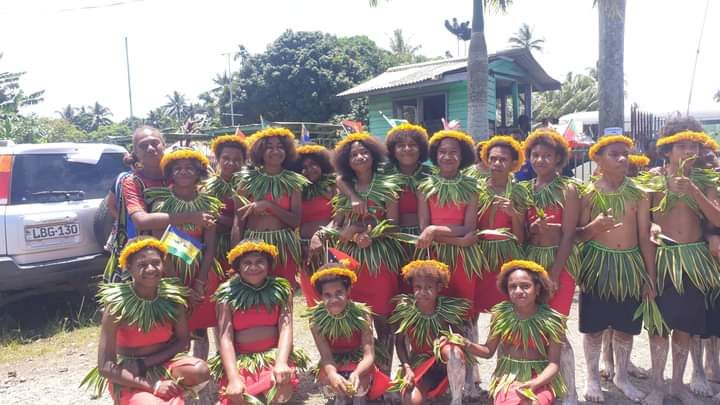
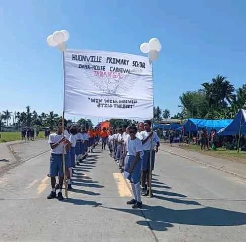
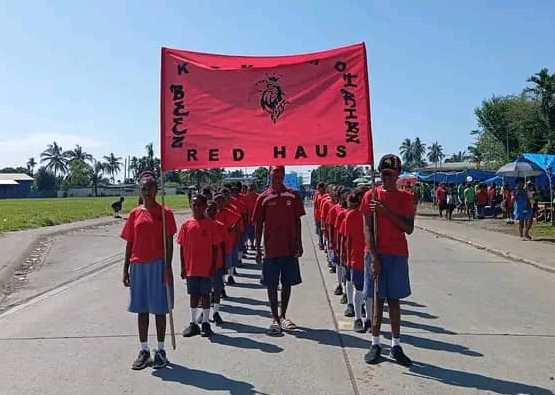
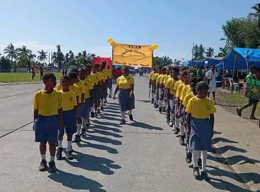

| School Name | : Huonville Primary School |
|---|---|
| Province Code | : 63 |
| School Code | : 018 |
| Level | : 8 |
| Established | : 1970 |
| Motor | : Progress Through Endeavour |
The third largest Primary School in Lae District, and one of the oldest established schools in the country
BRIEF HISTORY
The current site of Huonville Primary School was once a forested wetlands covered with hard wood timber trees. The Australian Administration identified this portion of land and moved into the area in 1968 and harvested round logs to be sawn off and timber used for early infrastructure in the then Lae Town.
After the logs were harvested, the administration then engaged the prisioners at Buimo Correctional Services (CIS) to clear the land for a new school to be set up to cater for the children of the expatriate government employees, Pre-self-Government and Independance.
There was also an emergence of the Indigenous local population migrating to Lae from all over Papua New Guinea to supply the labor force market that was readily available with exiting times ahead. The need for adequate housing was identified hence housing project commenced around the school vicinity. This housed most of the pioneer students of Huonville.
The school was built by either Barclay Brothers or Thiess Watkins, two of the leading construction companies of that time.
Enrollment commenced and classes began in 1970 with 16 classrooms, 16 expatriate teachers and 480 pioneer students with the Head Teacher, Mr. Perry.
Today, Huonville has an average of 2,000 student population, 47 National Teachers with 8 Streams of classes from Grade 3 to 8.


`
SCHOOL DATA
School data contains information about the student body such as population ratio, male and female ratio, place of residance, students with dissability etc. at a point in time. This information is sent to the District Education every month. School Data is extracted from School Registration System and is readily available and accessible anytime.

From the school data report, notice that we have students residing all over the city and coming to school. One of the significance of this report is that when a location in the city has issues such as fight, bus strike etc. the school knows exactly how many students will be affected.
PROGRAMS & ACTIVITIES
Mini Cultural Show
In 2022 we host our first ever mini School Cultural Show. Students dressed in their various traditional attire to engage, embrace and take pride in their cultural heritage. Other activities such as food preparation, food preservations and 'tumbuna' stories were amongst significant exhibits during the show.



Inter-House School Carnival
Sports has always been an integral part of the curriculum where we engage in sporting activities and keeping students updated with the latest in sporting rules and ethics on and off the field. School carnival is the highlight of the activities and is celebrated annually. This year 2024 we hold our Inter-School House carnival on the 1st week of September (9th-12th) and close up with Pre-Independence celebration on the 13th September 2024.
  
Teachers Day
Huonville's Board of Management, Students & Parents recognizes their teachers as the key stakeholder to the nation building, valuing their commitments in educating Papua New Guineans. In recognizing our teachers commitment, the annual Teachers Day program is organized by School Board of Management and supported by students and parents/guardians.


School Examination
Huonville has continued to produce some of the best students to Busu Secondary school-one of the top performing secondary schools in the country. Some of the top academic performers in Colleges and Universities in the country have roots in Huonville primary school.


PROPOSE PLAN-THE GREEN DREAM
The school Board of Management is committed to the future of the school hence invested in the school's Master Plan called "Green Dream". The architectural plan, design and costing are finalized and ready for implementation. Work on the first batch of the plan (8 in 1 Double classroom) is anticipated to commence this year and hopefully be completed by next year 2025.
Huonville's Master Plan-2050
What people say about Us

I like this school because of the environment, teachers and students who made my learning exiting, challenging and fun
Melainie Wanjo
Grade 7 Student-2023
I like this school because of the environment, teachers and students who made my learning exiting, challenging and fun
Adasha Steven
Cassowary Road-2023
I like this school because of the environment, teachers and students who made my learning exiting, challenging and fun